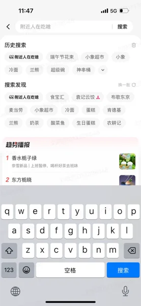
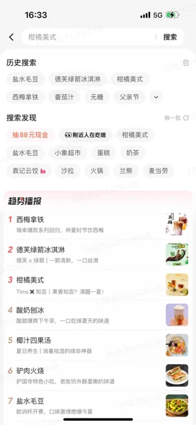
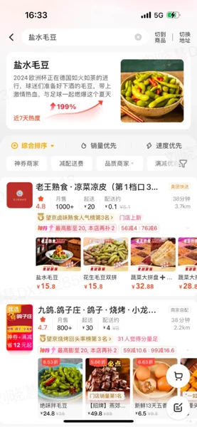

渗透率 0.35%，不是内容的问题，
是链路断了
趋势播报已经积累了一批高频用户，核心用户的 UV_CTR 从 1.24% 提升到了 2.71%，7日留存也在持续增长。但日渗透率只有 0.35%——这个数字背后藏着一个判断：不是用户不感兴趣，而是他们根本没有机会"遇见"热点。调研发现，九成用户在被引导后能发现榜单，并表现出极大兴趣；但在此之前，他们完全不知道这个功能的存在。
内容质量不够好
直觉判断：优化榜单内容和视觉，让热点更吸引人。
触达链路断裂
热点只有一个入口，用户在搜索框、sug 词、商品卡片等高频节点完全感知不到热点的存在。
热点渗透率 0.35%，不是内容的问题，是链路断了
每天有大量用户在外卖 APP 里搜索，但趋势播报的日渗透率只有 0.35%。面对"渗透率低"这个笼统的问题，我们的第一个判断是：不能直接跳到"优化榜单"，要先搞清楚用户从"不知道有热点"到"被种草下单"，中间经历了哪些节点，每个节点的断点在哪里。




让热点"无处不在"：从单一入口到全场景渗透
热点要出现在用户已经在走的路径上
不是等用户主动来找，而是在搜索框内词、sug 打标、二搜结果页、商家/商品卡片等高频节点增加热点标记——让用户在正常搜索流程中就能感知到热点的存在。
一个榜单不能同时服务两种完全不同的场景
原有榜单既要承担"发现"功能，又要承担"深度浏览"功能。我们拆成沉浸落地页（深度种草）和轻量半浮层（快速浏览）两种形态，同时把"看完一个热点再看下一个"的跳转层级从多步压缩到一步。
五类热点，五套信息架构——不是模板复用，是精准匹配
种草这条线最难的地方，是不同热点的用户场景完全不同：端午节礼盒是"节日临近有礼赠需求"，瑞幸酱香拿铁是"品牌联名新品想尝鲜"，芋泥香酥鸭是"新概念需要科普"——用同一套模板承接，必然有人看不懂，有人觉得信息不够。
我们首次定义了外卖平台的五类热点类型，并提炼出种草信息的三个核心维度：
热度体现
热度值、时效性标签（节日/季节限定）——让用户感知"这个现在很火"，激发从众心理和尝鲜欲望
是什么 / 为什么
热点起源、商品描述（外观/口味/食材）、延展内容——帮用户从"听说过"到"真的懂了"
相信认同
用户真实评价、群体认同感、平台/品牌信任——让用户从"感兴趣"到"愿意下单"
节日临近，有礼赠需求
新热点概念，需要科普
品牌联名新品，新奇口味
熟悉又不特了解的话题
自带多个热点的品类
这个项目真正难的地方
框架搭好了，但背后有几个判断值得复盘。
渗透率低，先别急着改榜单
这个项目最容易走的弯路，是直接优化榜单内容和视觉——毕竟那是最显眼的设计对象。但数据告诉我们，用户不是因为榜单不好看才不来，而是根本没有机会看到。问题在链路，不在终点。用 AARRR 拆解之后，我们才发现触达环节才是最大的断点——渗透率 0.35% 的根因，是热点只有一个入口。这个判断让我们把资源优先投入到前置触达，而不是继续打磨已经在用的用户才能看到的东西。
一套模板服务五类热点，是在偷懒
种草阶段最大的取舍，是要不要为不同热点类型分别设计信息架构。这件事很重，意味着更多的设计和开发成本；但不做，意味着用"节日礼盒"的模板去承接"品牌联名新品"，用户看到的信息永远是错的。我们的判断是宁可分层，不能错配。五类热点的划分不是为了分类而分类，是因为每类热点背后的用户场景、决策逻辑、所需信息都不一样。
设计定义了热点类型，产品才有了运营抓手
热点类型的五分法，最初是设计侧在梳理信息架构时提出的——不是产品需求，是设计在分析用户场景时发现"现有分类根本不够用"。这个框架后来被产品和运营采纳，成为热点内容分发和运营策略的基础分类体系。设计定义信息架构，反向影响了业务的运营逻辑——设计不只是执行需求，也可以是定义问题的那个角色。
种草和交易的矛盾，要敢于说"现在不做"
项目初期有讨论：要不要在热点页面直接加购物车，缩短种草到下单的路径？数据和访谈都显示用户有交易意愿，但我们最终的判断是短期不强推交易转化。原因是：热点激发场景和交易场景的用户心态不同，强行合并会破坏种草体验，反而降低留存。这个"不做"的判断比"做什么"更难——它需要你在有数据支撑的情况下，主动放弃一个看起来合理的方向。